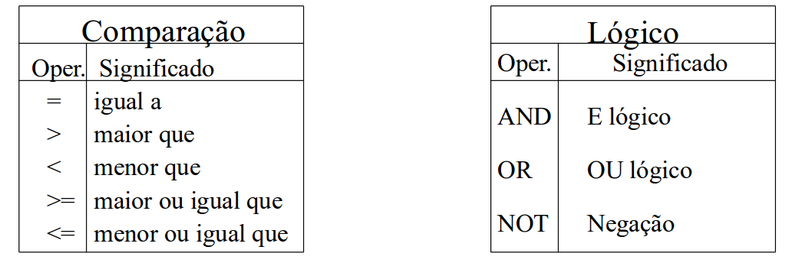

2 Banco de Dados & SQL
2.1 Introdução
O conceito de banco de dados está muito presente em nosso dia-a-dia e faz parte de nossa vida
Banco de dados (BD) desempenha um papel crítico em muitas áreas onde computadores são utilizados
BD está presente em muitas áreas diferentes (negócios, engenharia, educação, medicina, etc.)
Um arranjo aleatório de dados não pode ser considerado um banco de dados
uma planilha não pode ser considerada um BD
2.2 Sistema Gerenciador de Banco de Dados
Um Sistema Gerenciador de Banco de Dados (SGBD) é uma coleção de programas que habilitam usuários a criar e manter um banco de dados.
O SGBD é um software de propósito geral, que facilita o processo de definição, construção e manipulação de um banco de dados.

2.3 Terminologia Básica

Campo – unidade básica de informação mínima com significado ( Coluna)
Registro - conjunto de campos (linha)
Atributo - área que pode conter um tipo de dados. É a interseção de uma linha com uma coluna.
Tabela -conjunto de registros
Banco de Dados (BD)-conjunto de Tabelas e as formas de manipulação (relacionamentos)
Modelo de Dados - Consiste de um conjunto de conceitos utilizados para descrever a estrutura de um BD, ou seja, os tipos de dados, relacionamentos e restrições sobre estes dados
Modelo Relaciona - representa os dados em um BD, por meio de um conjunto de relações
Chave Primária - É a coluna que identifica com exclusividade cada linha de um tabela
Chave Estrangeira - É uma coluna ou conjunto de colunas referente a uma chave primária de uma outra tabela. A partir da chave estrangeira podemos relacionar tabelas (join)
2.4 Modelo de Dados
Consiste de um conjunto de conceitos utilizados para descrever a estrutura de um BD, ou seja, os tipos de dados, relacionamentos e restrições sobre estes dados
No Modelo Relacional representa-se os dados em um BD, por meio de um conjunto de relações.
existem várias técnicas e tipos de representações de modelagem ( modelo externo, modelo ER,modelo conceitual)

3 SQL - Structured Query Language
3.1 1 Introdução ao SQL
SQL é a linguagem padrão para bancos de dados relacionais. Os principais Bancos de Dados Relacionais aceitam alguma forma do SQL. Abaixo, algumas terminologias em Banco de Dados
SQL surgiu no início da década de 70, por uma iniciativa da IBM. desde a década de 1990 tornou-se a linguagem mais popular para acesso a bancos de dados, associado a difusão dos SGBDs relacionais
existem dois tipos básicos de linguagem:
Linguagem procedural: fornece uma descrição detalhada de COMO uma tarefa é realizada, operando sobre um registro ou uma unidade de dados a cada vez.
Linguagem não procedural: é uma descrição de O QUE se deseja, onde o sistema deverá determinar a forma de fazer.
o SQL consiste em uma linguagem não procedural que permite a interface básica para comunicação com o banco de dados
Um SGBD realiza alguns processos que podem ser efetuados por meio da linguagem SQL
DEFINIÇÃO (DDL): criação do esquema (tabelas e relacionamentos) que atenderá as necessidades no BD;
MANIPULAÇÃO( DML): inclusão, deleção e modificação dos dados no BD;
CONSULTA (DQL) : realização de consultas no BD;
select nome from alunos ;

3.1.1 DEFINIÇÃO e MANIPULAÇÃO (DDL & DML)
Para iniciar a definição de um BD é necessário conhecer os tipos de dados que o BD manipula. De uma maneira geral serão manipulados os tipos:
• números ( -45 | 0 | 25.57 )
• caracteres (José Roberto | abacaxi| rua das amendoeiras, 516)
• datas e horas (dia, mês e ano | 23 / 12 / 01 | 2017-10-01 21:07:47 GMT0)
• objetos binarios (imagem, musica, arquivo executavel)
obs: o dado faltante é chamado NULLA sintaxe que identifica estes tipos dependentes do BD, em geral:
integer, float, double – numéricos
character, char(n),varchar(n) – caracteres variáveis até 4000
date – de 1/1/4712 A.C. até 31/12/9999 D.C.
blob - objetos binarios até ~ 4Gb3.1.1.1 criando uma tabela
Para criar uma tabela será usada a declaração SQL (DDL) criando a tabela. de uma maneira geral
create table <nome_tabela> (
campo_1 <tipo de dado>, -- atributo do campo
campo_2 <tipo de dado>,
campo_3 <tipo de dados> ) ;
O ponto e vírgula encerra uma instrução deixando-a pronta para ser executada <ENTER>. 3.1.1.2 Exemplo
Como seria a criação de uma tabela que armazenaria os nomes e siglas de todas a UF
CREATE TABLE estados ( uf integer, sigla char(2), regiao char(2), nome varchar(50) )
#### Inserindo dados (populando a tabela)
Instrução INSERT - Esta instrução é usada para inserir dados na tabela.
INSERT INTO <tabela>[(coluna_1,...,coluna_n)] VALUES (valor_1,...,valor_n);Exemplo:
INSERT INTO estados(uf, sigla, regiao,nome) VALUES (33, ‘RJ’, ‘SE’,‘Rio de Janeiro’); INSERT INTO estados VALUES (31, ‘MG’, ‘SE’,‘Minas Gerais’); INSERT INTO estados(sigla, nome,uf,regiao) VALUES (‘SP’, ‘São Paulo’, 35,‘SE’); INSERT INTO estados( nome,regiao,uf,sigla) VALUES (‘Espirito Santo’, ‘SE’,32,‘ES’); INSERT INTO estados(sigla,‘regiao’,nome) VALUES(‘GO’, ‘CO’,‘Goias’); – faltou UF que vai assumir valor NULL
a modificação dos registros é feita usando o comando UPDATE por exemplo
UPDATE estado SET nome = 'Goiás' , uf = 52 WHERE sigla = 'GO'; 3.1.1.3 Apagando os Dados
Instrução DELETE - Esta instrução é usada para remover uma ou registros da tabela, possuindo duas formas básicas:
DELETE FROM
ou DELETE FROM
A primeira forma é obrigatória e apaga todos os dados da tabela, enquanto que a segunda possui uma parte opcional, a partir do WHERE, que apaga somente os dados da tabela que atendem a uma condição (ou condições) imposta pela cláusula WHERE.
Exemplo:
DELETE FROM ESTADOS WHERE SIGLA = 'SP'; -- 1 linha deletada
DELETE FROM ESTADOS WHERE NOME = 'ACRE'; -- nenhuma linha encontrada
DELETE FROM ESTADOS; -- todas as linhas deletadas ATENÇÃO. 3.1.1.4 Remover uma Tabela
Para se remover uma tabela deve-se usar o comando DROP TABLE.
DROP TABLE <nome_da_tabela>;Por meio deste comando a tabela deixará de existir neste banco de dados, sendo todas as informações contidas nela vão ser ** TOTALMENTE apagadas (Não tem UNDO) **.
Exemplo:
DROP TABLE ESTADOS; – Tabela eliminada
3.1.2 CONSULTA (DQL)
Instrução SELECT
Esta instrução é a essência da linguagem SQL. É por meio dela que se recupera dados de um banco de dados. De modo simples, forma declarativa, está se dizendo ao BD quais informações foram selecionadas para serem recuperadas.
Pode-se dividir esta instrução em quatro partes básicas:
• select – seguido dos atributos que se deseja ver (obrigatório)
• from – seguido de onde se obterão os dados (obrigatório)
• where – seguido das restrições de recuperação (opcional)
• order by – seguido da forma como os dados serão classificados (opcional)
• group by – Agrega os dados (opcional) O símbolo asterisco ( * ) significa que todos atributos da relação informada deverão ser recuperados.
Exemplo:
SELECT * from ESTADO;
SELECT * FROM estado WHERE SIGLA='GO' OR NOME='Acre' ;
o SELECT será a instrução mais comumente usada na linguagem SQL. repare que o SQL não é case sensitive como a maioria das linguagens!
Na cláusula WHERE serão utilizados alguns operadores de comparação e lógicos para que a condição seja especificada. Os operadores logicos usados em SQL são:

3.1.2.1 criando novas tabelas a partir de tabelas existentes
É muito simples a criação de novas tabelas bastausar o CREATE TABLE usando o resultado de um SELECT.
CREATE TABLE sudeste AS (SELECT * FROM estados WHERE regiao = 'SE') ;3.1.3 JOINS (Relacionando as Tabelas)
Existem diversas maneiras de se fazer o relacionamento entre duas tabelas. os mais comuns são:
INNER JOIN Este é simples e comumente empregado. Esta query retornará todos os registros da tabela A (esquerda) que têm correspondência com a tabela B (direita). Ou seja, o que existe de comum entre A e B. Podemos escrever este JOIN da seguinte forma:
SELECT * FROM A INNER JOIN B ON A.chave = B.chave
LEFT JOIN Esta consulta retorna todos os registros da tabela A (esquerda) e o que existir em comun com a tabela B (direita) O código ficará da seguinte forma:
SELECT * FROM A LEFT JOIN B ON A.chave = B.chave
OUTER JOIN Este relacionamento é conhecido tambem como FULL OUTER JOIN ou FULL JOIN. Esta consulta retornará todos os registros das duas tabelas e juntando também os registros correspondentes entres as duas tabelas. O que for diferente nas duas tabelas ficara com o valor NULL. O código ficará da seguinte forma:
SELECT * FROM A FULL OUTER JOIN B ON A.chave = B.chave

3.1.4 Funções
Seguem algumas funções comumente usadas em SQL, lembre-se que cada versão e SGDB usa dialetos diferentes.
Funções simples (mais comumente usadas):
ABS(n)= Devolve o valor absoluto de (n). CEIL(n)= Obtém o valor inteiro imediatamente superior ou igual a “n”. FLOOT(n) = Devolve o valor inteiro imediatamente inferior ou igual a “n”. MOD (m, n)= Devolve o resto resultante de dividir “m” entre “n”. POWER (m, exponente)= Calcula a potência de um número. ROUND (número [, m])= Arredonda números com o número de dígitos de precisão indicados. SIGN (valor)= Indica o signal do “valor”. SQRT(n)= Devolve a raiz quadrada de “n”. TRUNC (número, [m])= Trunca números para que tenham uma certa quantidade de dígitos de precisão.
Funções Agregadas :
COUNT ( * | Expressão)= Conta o número de ocorrências (A opção "*" conta todos os registros selecionados).
AVG (n)= Calcula o valor médio de "n" ignorando os valores nulos.
MAX (expressão)= Calcula o máximo.
MIN (expressão)= Calcula o mínimo.
SUM (expressão)= Obtém a soma dos valores da expressão. (se houver NULL retorna NULL)
TOTAL(expressão) = soma ignorando NULLFunções de caracteres:
CONCAT (str1, str2)= Devolve "str1" concatenada com "str2".
LOWER (str)= Devolve a string em minúsculas.
UPPER (str)= Devolve a string em maiúsculas.
SUBSTR (str, m [,n])= Obtém parte de uma string.
LENGTH (str)= Devolve o número de caracteres de str.
REPLACE (str, cadeia_busca [, cadeia_substituição])= Substitui um caractere ou caracteres de uma cadeia com 0 ou mais caracteres.
funções de datas:
DATE() - retorna a data ou transforma em data
TIME() - retorna tempo
STRFTIME(fmt,data) - formata a data no formato Exemplos:
SELECT count(*) from Estados;
SELECT date() ;
SELECT round(355.0 / 113.0,6) ; -- que número é esse? Teste sem o .0